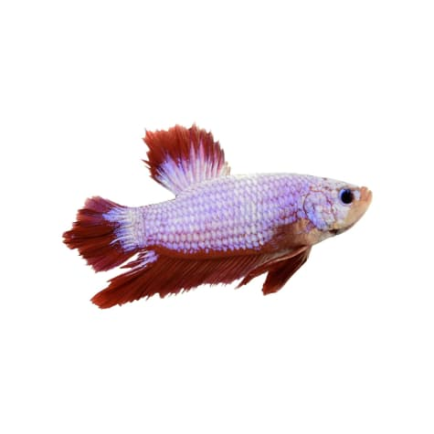
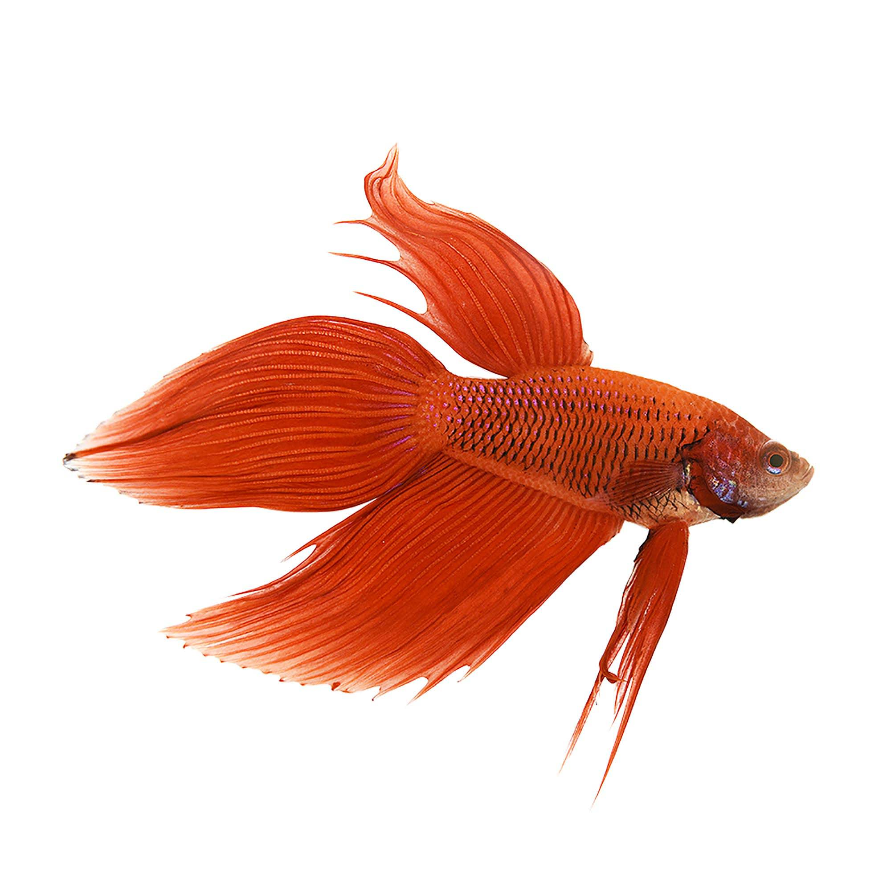
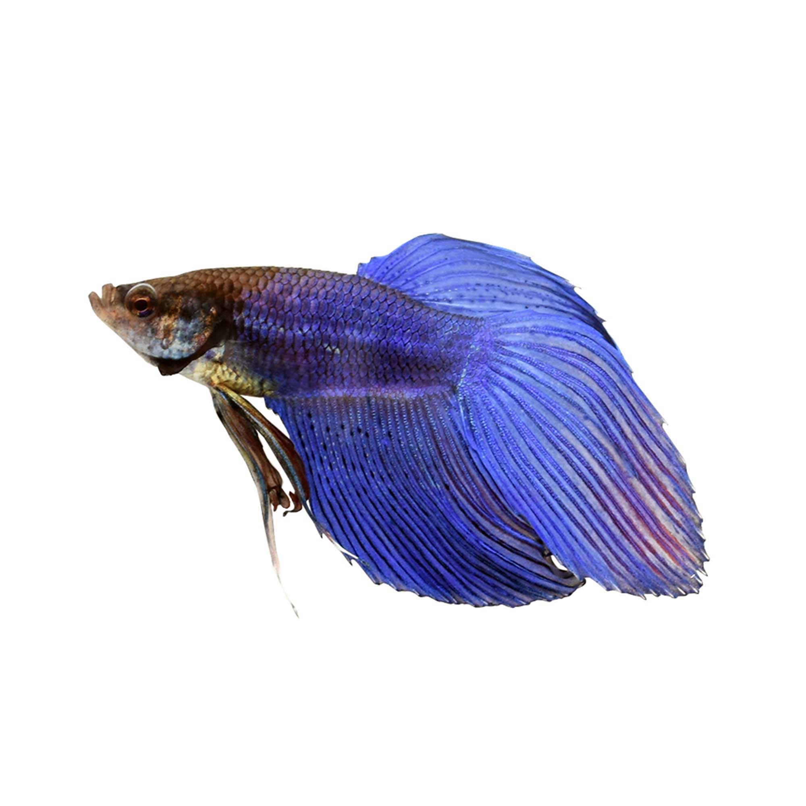
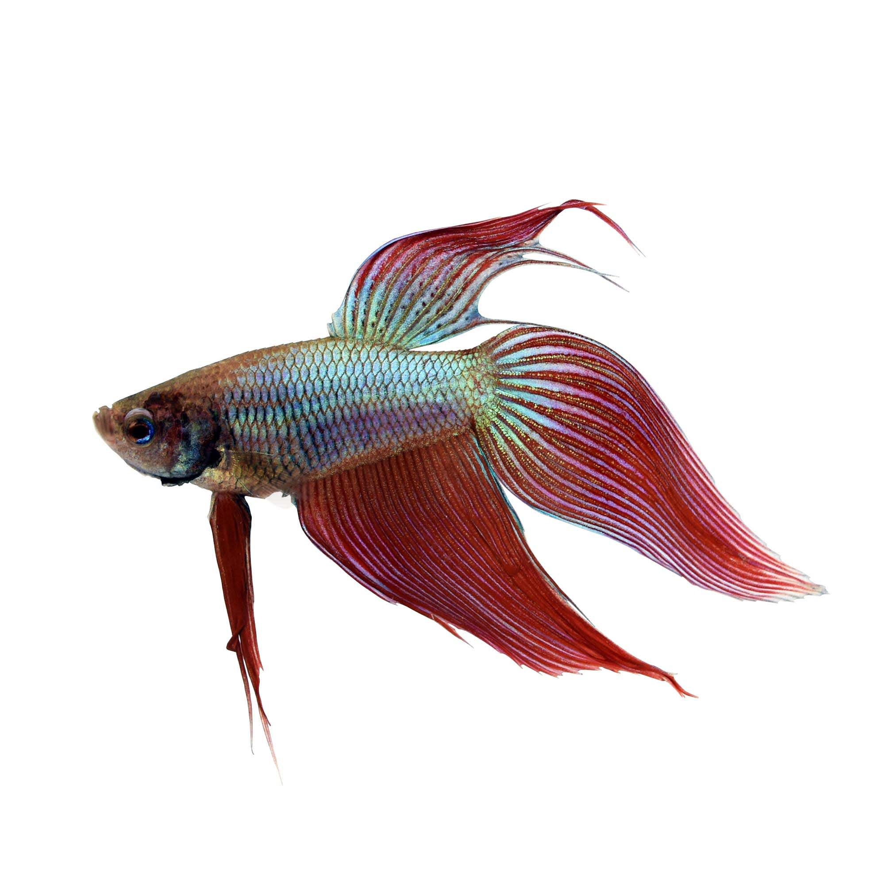

Bettas come in two varieties: betta plakat and betta splendens. Betta splendens are characterized by their large fins while betta plakats are characterized by their short fins. The larger fins of the betta splendens often make them more visually appealing but the large fins can make it difficult for the fish to swim. The larger finned varieties are also notorious for biting thier fins and developing problems that make their care more difficult. The shorted finned plakats, contrast, rarely have problems swimming and are very easy to take care of. (Be warned though: because plakats can swim easily, some have been known to develop a jumping tendancy so tanks need to be fully covered.)
| |
 |
| caption | cpation2 |
In addition to the distincition between plakat and spendens, betta are further divided by their fin shape. Some common examples are shown below.
half moon and plakat|  |  |  |
| caption | cpation2 | cpatiion2 |